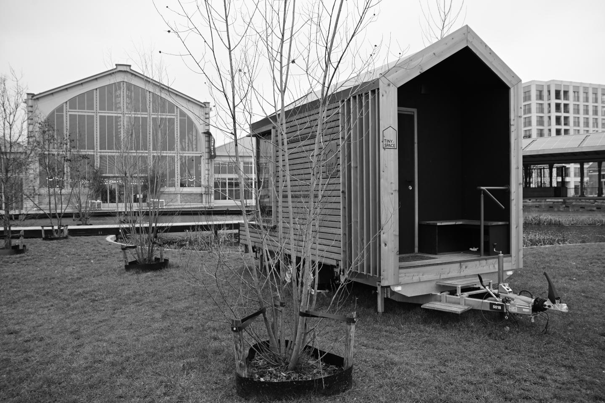
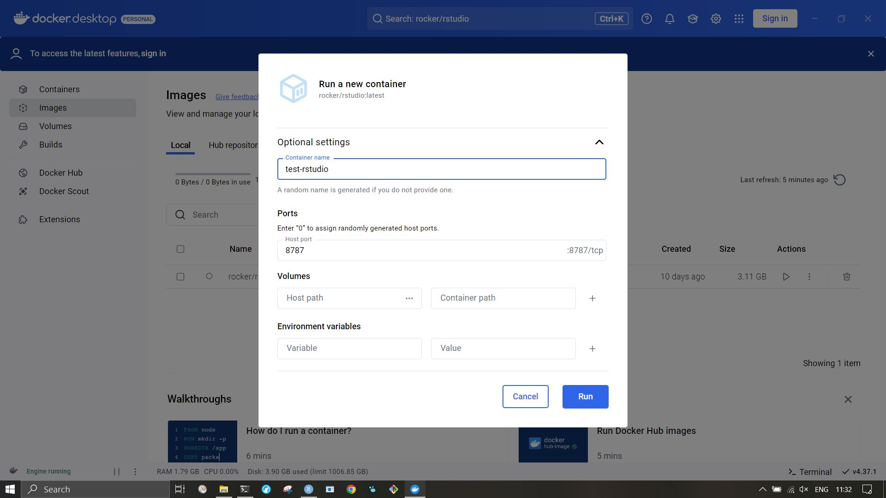
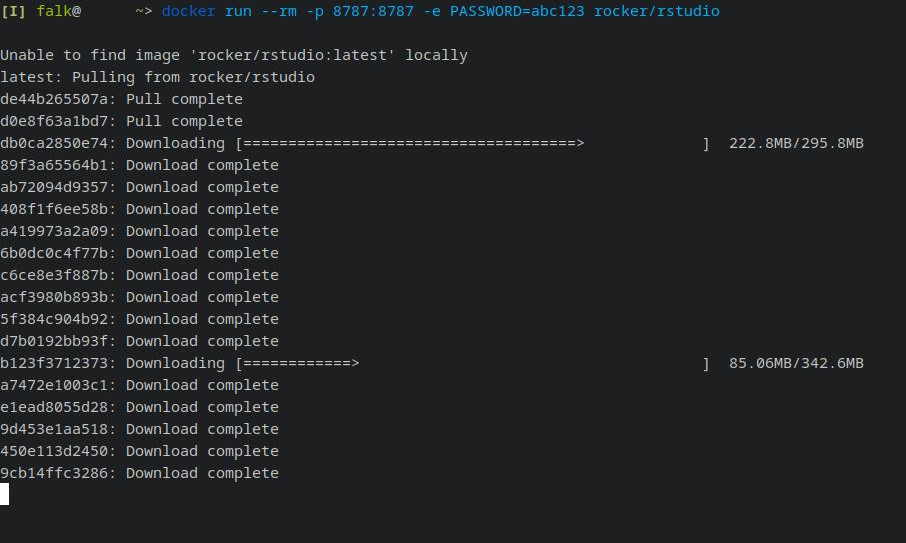

Containers (2): Running Existing Containers
Pulling and running containers from an online container repository.
Docker is about assembling and working in containers. “Living” in containers. Or, rather, you can think of this as living in a “tiny home”, or “mobile home”. (Let’s call it a fancy caravan.) In the simple, but comfortable case, you do not get to pick a general design or to choose all details of the interior: you just take that wheeled cabine “as is” from a tiny home reseller.

Just as a tiny home is a mini-version of an immobile house, a container can be thought of as a miniature computer which can be transferred to other computing environments. The good news: there are a gazillion Docker images available on repositories like Docker Hub or Quay.
This tutorial will show you how to use such “containers-to-go”, thereby demonstrating some basic principles and vocabulary about containerization. I assume that you have installed docker. This tutorial will stay on the more involved route of running Docker in the terminal (the Docker Desktop “app” is rather self-explanatory, and you can manoever it easily with knowledge of terminal vocabulary). Once you master these first step, you can proceed to customize your container images. You might also consider Podman as a Docker alternative.
Example
Because of the useful idea of bringing your computer environment along (think of benefits for distributed computing), container images of all kind are abundant on the container repositories mentioned above. For example1, there are Docker images with rstudio server pre-installed:

If you are comfortable using the terminal, execute the following script (Windows: use an administrator terminal). If it does not find the resources locally, Docker will download and extract the image from Docker Hub2.
docker run --rm -p 8787:8787 -e PASSWORD=YOURNEWPASSWORD rocker/rstudio
- The
runcommand will automaticallypull, i.e. download an existing image; though you could alsopullwithout running. - The
--rmflag makes the Docker container non-permanent, i.e. disk space will be freed after you close the container (Section 0.4). - The port specified at
-pis the one you use to access this local container server (the-pactually maps host- and container ports). You have to specify it explicitly, otherwise the host system will not let you pass (:gandalf-meme:). - The
-eflag allows you to specify environment variables, in this case used to set a password for the RStudio server. But if you do not specify one, a random password will be generated and displayed upon startup (read the terminal output).

You are now running (run) a rocker/rstudio server instance on your localhost, i.e. your computer.
You can access it via a browser, going to localhost:8787, with the username rstudio and your chosen password.
You can shut down the container with the keyboard shortcut [ctrl]+[C] (probably [ctrl]+[Z] [Return] on Windows).
File Access
The downside of this is that your container is isolated (well… at least to a certain degree).
Images can take up considerable storage space. Storing files locally, i.e. on the host machine, without storing an unneccessarily filled container, might be a good strategy. This can be achieved by mapping a virtual path on the container to a local drive on your computer. (Linux users will be familiar with the concept of “mounting” and “linking” storage locations.) Note that the technique is equally relevant when running the container locally, hence not exclusive to remote hosts.
Docker run brings the -v flag for mounting volumes.
Suppose you have an R project you would like to work on, stored, for example, in this path:
/data/git/coding-club
Then you can link this to your container’s home folder via the following command.
# Windows syntax, mapping on `D:\data`
docker run --rm -p 8787:8787 -v //d/data/git/coding-club:/home/rstudio/coding-club rocker/rstudio
# Linux syntax
docker run --rm -p 8787:8787 -v /data/git/coding-club:/home/rstudio/coding-club rocker/rstudio
Again, navigate to localhost:8787, et voilà, you can access your project and store files back in your regular folders.
Limitations
This is a simple and quick way to run R and RStudio in a container.
However, there are limitations:
- You have to live with the R packages provided in the container, or otherwise install them each time you access it…
- … unless you make your container permanent by omitting the
--rmoption. Note that this will cost considerable disk space, will not transfer to other computers (the original purpose of Docker), and demand occasional updates (Section 0.4). - You could alternatively add
--pull alwaystodocker run, which will check and pull new versions. - Speaking of updates: it is good practice to keep software up to date. Occasionally update or simply re-install your Docker image and R packages to get the latest versions.
- You should make sure that the containers are configured correctly and securely. This is especially important with server components which expose your machine to the internet.
- Because most containers contain a Linux system, user permissions are taken seriously, and the consequences might be confusing. There are guides online (e.g. here); there are example repositories (like the author’s own struggle here and here); base images are well set up and one can normally get by with default users.
- There is a performance penalty from using containers: in inaccurate laymans’ terms, they emulate (parts of a) “computer” inside your computer.
On the performance issue: I attempted this on my local laptop with matrix multiplication.
# https://cran.r-project.org/web/packages/rbenchmark/rbenchmark.pdf
# install.packages("rbenchmark")
test <- function(){
# test from https://prdm0.github.io/ropenblas/#installation
m <- 1e4; n <- 1e3; k <- 3e2
X <- matrix(rnorm(m*k), nrow=m); Y <- matrix(rnorm(n*k), ncol=n)
X %*% Y
}
benchmark(test())
In the terminal:
test replications elapsed relative user.self sys.self user.child sys.child
1 test() 100 22.391 1 83.961 65.291 0 0
In the container:
test replications elapsed relative user.self sys.self user.child sys.child
1 test() 100 26.076 1 102.494 153.89 0 0
Now, the good news is that the difference is not by orders of magnitude.
This indicates that the chosen rocker image integrated the more performant blas variant which is recommended elsewhere (blas-openblas).
The bad news is that we still suffer a performance drop of -20%, which is considerable.
This is just a single snapshot on a laptop, and putatively blas-confounded.
Feel free to systematically and scientifically repeat the tests on your own machine.
Container Permanence: The --rm Option
As briefly touched above, docker run comes with the --rm option.
This basically enables two separate workflows, i.e. usage paradigms.
The first option, which is the default, is that your container is stored on the system permanently.
This counts for the upstream images, which are downloaded upon first invocation of a container.
But also, changes you apply while working in the container are persistently stored until you log in again, using hard drive space of the host.
Images may still be removed by manually running docker rmi [...] (cf. “useful commands” in the overview tutorial).
In contrast, with the second option, docker run --rm [...], ad-hoc changes in the container are removed when the container is finished.
Unless, of course, you mount a local volume with docker run --rm -v [...] (Section 0.2).
However, contrary to a rather general intuition, starting a container with --rm will not require dependency download a second time.
You might want to test this for yourself. Consider the following series of commands to create a test file in the Docker home directory:
docker run --name testing_permanence --rm -it docker.io/rocker/r-base
echo "testing permanence." > ~/test.txt
cat ~/test.txt
exit
Re-connecting is instantateous. However,
docker run --name testing_permanence --rm -it docker.io/rocker/r-base bash
cat ~/test.txt
will return:
cat: /root/test.txt: No such file or directory
This behavior is desired (in the second workflow above): if you start up a fresh environment each time you work in Docker, you assure that your work pipeline is independent of prior changes on the system. Whether this makes sense as a workflow has to be evaluated with respect to hard drive space requirement, updates, the option to build upon a customized Dockerfile, reproducibility potential.
You can “link in” folders for working files (note how you have to specify the full path to new_home, and that this container uses the root user by default):
mkdir new_home
docker run --name testing_permanence -v /data/containers/new_home:/root --rm -it docker.io/rocker/r-base bash
echo "testing permanence." > ~/test.txt
Using --rm might not be desirable in every case.
However, it is a valuable option for testing, good to have when disk space is sparse, or as a final check before publishing.
Generally, I would consider it good practice to treat containers as volatile, thereby keeping them hostmachine-independent as much as possible.
Summary
Docker images are the actual containers which you create from the Dockerfile blueprints by the process of building. In the “tiny home” metaphor: your “image” is the physical (small, but real, DIY-achievement) home to live in, built from step-by-step instructions. Think of a Docker image as a virtual copy of your computer which you store for later re-activation.
Luckily, other people have prepared images for you. For example, a collection of images for specific analysis pipelines at INBO are preserved at Docker Hub/inbobmk. We consider these “stable” versions because they could be re-activated at any point in the future, which enables us to return to all details of previous analyses.
This tutorial provided introductory details on how to run such images.
If you would like to take this further and customize your containers, proceed with the next tutorial about the build command.
Those commands are practically identical in Docker and Podman.
An overview on the topic is available here.
-
I mostly follow this tutorial. ↩︎
-
Just like “Github” is a server service to store git repositories, guess what: “Docker Hub” is a hosting service to store Docker containers. ↩︎